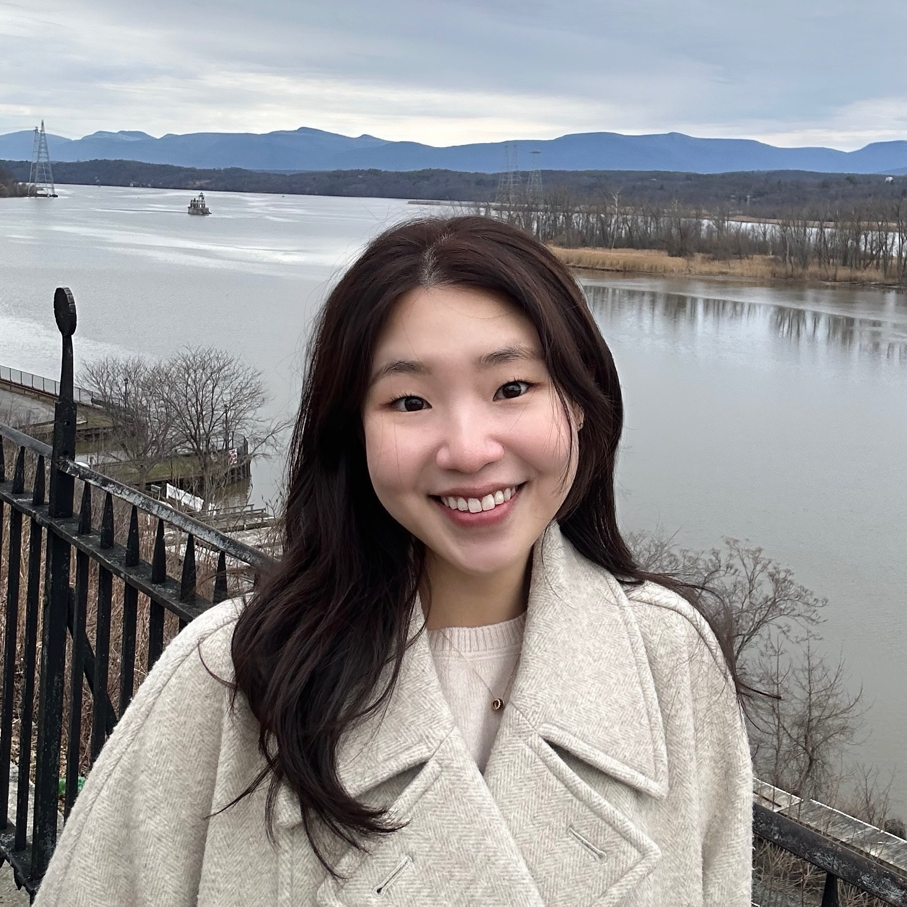

Ph.D. Candidate
Department of Political Science
Columbia University
I am a Ph.D. candidate in the Department of Political Science at Columbia University, specializing in international political economy and international institutions. My research studies the politics of global governance under strain, focusing on how governments, firms, and IOs adapt when multilateral rules, enforcement, and legitimacy weaken.
My work has appeared in International Studies Quarterly, and my research is supported by the Columbia Center for Political Economy. I hold a B.A. and M.A. in Political Science from Korea University, Seoul.
You can view my CV (updated June 2026) here.
Strategic Censorship? Public Opinion, Authoritarian Politics, and the International Trade Regime
Seowoo Chung
Forthcoming at International Studies Quarterly
[abstract]
International organizations promote cooperation by diffusing information among states and the public. But how does this information reach the public under authoritarian regimes? I examine how an authoritarian government with a censorship apparatus can use government-controlled media to offset international organizations’ information effects. The authoritarian government selectively censors IO news based on the likelihood of success in invoking a defensive reaction, suppressing complaints made by neutral counterparts that may lead to concerns for noncompliance while allowing limited attention toward provocative complaints by hostile states. I find support for my arguments through analysis of an original dataset of Chinese newspaper articles by 116 newspapers on all WTO disputes involving China. Survey experiment on Chinese citizens tests the microfoundations of the information strategy, finding that exposure to information about China being sued in a WTO dispute significantly reduces support for international law, especially for those disputes against the United States.
The Decline of Multilateralism and Foreign Lobbying: Evidence from the WTO Appellate Body Crisis
Seowoo Chung
[abstract]
How do firms adapt when multilateral adjudication becomes less effective? This paper argues that the weakening of WTO dispute settlement redirects firms’ responses to trade barriers from multilateral legal channels toward domestic political lobbying. Under a functioning adjudication system, firms exposed to foreign trade barriers can seek relief indirectly by mobilizing their home governments to pursue legal challenges. As this system weakens, legal remedies become less reliable, policy uncertainty rises, and influence over domestic policymakers becomes more valuable. I test this argument using the WTO Appellate Body crisis and a novel firm-level measure of exposure to U.S. antidumping and countervailing duties, constructed from bill-of-lading data and the timing of U.S. trade remedy actions. Panel event-study estimates show that exposed foreign firms increased lobbying beginning in late 2017, as the Appellate Body crisis intensified, and that this pattern is not explained by exposure to Section 301 or Section 232 tariffs. The increase is concentrated among firms from countries that were historically active users of WTO dispute settlement. These findings show that the erosion of multilateral adjudication does not eliminate foreign influence over trade policy, but redirects it into more opaque channels of domestic lobbying.
Global Governance Unbound? Expansion Dynamics in the IMF
Allison Carnegie, Seowoo Chung, and Richard Clark
Revise and Resubmit at Review of International Organizations
[abstract]
While some scholars argue that bureaucratic IOs tend to outgrow their mandates, others claim that IOs curtail their activities under pressure. We introduce a new measure of scope expansion in IOs to adjudicate this debate. We argue that IOs broaden their remits during stable periods, incorporating salient issues to maintain relevance and competitiveness. However, during crises, they retrench and refocus on core priorities. To test this argument, we analyze novel text data from IMF working papers, tracking the breadth of topics covered by Fund researchers over time. We then assess whether shifts in IMF funding align with these trends. Our findings show that the IMF moderately expanded its purview in the 21st century, incorporating gender issues and climate change into its work, but significantly narrowed its focus during the 2007–2009 global financial crisis. These results carry important implications for claims of IO overreach and offer insights regarding the legitimacy and adaptability of global governance.
AI in Global Governance: International Organizations, Emerging Technology, and Legitimacy
Allison Carnegie, Seowoo Chung, and Lisa Fan
Under Review
[abstract]
International organizations (IOs) need legitimacy to perform their mandates, but they also compete for public attention in an increasingly crowded information environment. This paper argues that artificial intelligence creates an attention--legitimacy tradeoff for global governance. On the one hand, AI can make IOs appear innovative, modern, and capable of addressing complex problems, thereby increasing public engagement. On the other hand, AI can undermine legitimacy because many people associate it with opacity, elite control, and weak accountability. We evaluate this argument using an original survey experiment and novel social media data. In the experiment, respondents are less supportive of IOs when those organizations emphasize their use of AI. In the observational analysis of IO Twitter posts from 2012 to 2022, however, tweets referencing AI generate greater engagement than otherwise similar posts. Our findings show that AI can increase the visibility of international organizations while eroding trust in them, creating a key tension as IOs seek to navigate the evolving global governance landscape.
Detection without Enforcement: Artificial Intelligence and the Limits of Global Governance.
Carnegie, Allison, Seowoo Chung, and Lisa Fan.
Political Barriers to the Energy Transition: Climate Risk, Investment Protection, and Firm Behavior
Seowoo Chung
Revolving Door Diplomats
Seowoo Chung, David Lindsey, Matt Malis, and Calvin Thrall